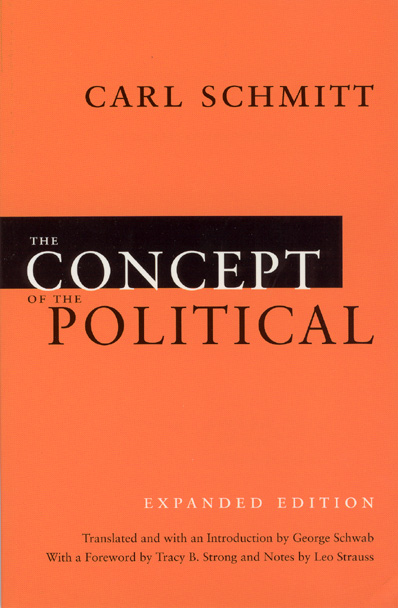
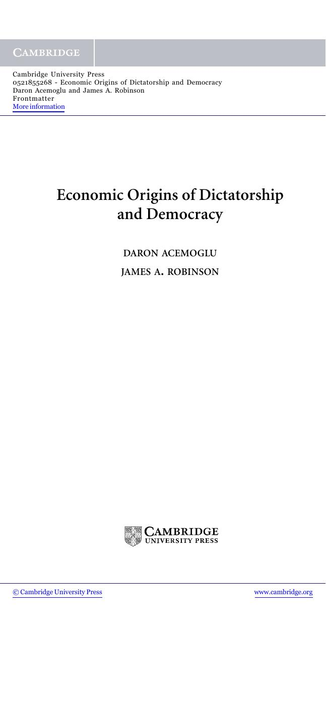

54:35 · 9 OPERE
Rainer Mausfeld, Paura e potere.
Il filo del discorso
La recensione di Angst und Macht di Rainer Mausfeld mette al centro una domanda: come può la paura diventare uno strumento di governo anche dove il linguaggio pubblico celebra libertà e democrazia? Dr Divago presenta il libro come un tentativo accessibile di analizzare la produzione dell’insicurezza e lo collega al precedente Warum schweigen die Lämmer?.
Leggi la sintesi completaRiduci la sintesi
Il suo elogio è accompagnato da riserve: a suo giudizio restano poco sviluppati i rapporti con Orwell e con la Scuola di Francoforte. La lettura diventa così una discussione sulla capacità di affrontare argomenti sgraditi senza ridurli alla appartenenza di chi parla. Il relatore contrappone alla paura di una minaccia determinata una insicurezza più diffusa e la connette alla precarietà materiale e alla dipendenza economica. La tesi di un dominio reso efficiente dal consenso e dal silenzio viene applicata ai media, al riconoscimento accademico e alla reputazione editoriale. Postman introduce il tema di una comunicazione che intrattiene anziché chiarire; il richiamo a Schmitt accompagna la critica della trasformazione del dissenso in inimicizia. Le accuse di omologazione e di autoritarismo sono posizioni del contributo, non descrizioni accertate di tutte le istituzioni o di ogni cittadino. Una lunga digressione riguarda i titoli professionali e l’Ordine dei giornalisti. Dr Divago racconta la propria scelta di non richiedere una iscrizione e difende il giudizio sui testi, indipendente dal marchio di chi li pubblica. Altri esempi, dai tatuaggi alla soppressione di piccoli tagli monetari, servono alla sua polemica sulla trasformazione sociale. La scheda distingue questi giudizi dalle regole effettive su professione, libertà di espressione e contante: cessare una emissione non equivale a cancellare il valore della moneta, e l’arrotondamento dei totali non abolisce il sistema decimale. La parte finale ritorna a Mausfeld, ai costi politici della repressione e al rapporto fra retorica democratica e concentrazione del potere. Gli esperimenti di Asch e Milgram sono ricordati per discutere conformismo e obbedienza, ma il relatore contesta che descrivano una natura umana indipendente dalla società. Sono distinti i limiti della generalizzazione e il valore dei risultati osservati: in Milgram non venivano realmente somministrate scariche alle vittime apparenti. L’ultima raccomandazione è il confronto argomentato, capace di accogliere alcuni passaggi di un discorso e contestarne altri, anziché rifiutarlo o accettarlo per intero.
I libri nel discorso

Angst und Macht (Paura e potere)
Note sul riferimento
Copertina: Angst und Macht. Herrschaftstechniken der Angsterzeugung in kapitalistischen Demokratien, Westend, 1 luglio 2019, 128 pagine, brossura, ISBN 9783864892813. Copertina originale tedesca fornita dall’editore; Paura e potere è la resa del titolo nel discorso, non una edizione italiana accertata.
Immagine autentica dell’opera, controllata visivamente; l’edizione di riferimento non è attribuita al filmato.
Titolo tedesco Angst und Macht e resa italiana Paura e potere espliciti; il video ne discute più passi.
Warum schweigen die Lämmer? Wie Elitendemokratie und Neoliberalismus unsere Gesellschaft und unsere Lebensgrundlagen zerstören
Note sul riferimento
Copertina: Westend, 2 ottobre 2018, rilegato, 304 pagine, ISBN 9783864892257. Copertina originale tedesca fornita dall’editore, con titolo, autore, sottotitolo e marchio riconoscibili. Il successivo tascabile del 2021 ha un altro ISBN e non viene attribuito a questa immagine.
Immagine autentica dell’opera, controllata visivamente; l’edizione di riferimento non è attribuita al filmato.
Il precedente libro è nominato in tedesco e tradotto oralmente Perché tacciono le pecore.

Il mondo nuovo
Identificazione probabile
Note sul riferimento
Copertina della raccolta: Mondadori · Oscar Moderni · 2016
L’immagine mostra il volume Mondadori che riunisce Il mondo nuovo e Ritorno al mondo nuovo. Il collegamento nel video riguarda il primo romanzo, per allusione al titolo inglese; non identifica un’edizione usata dal relatore.
Brave New World è usato come riferimento al mondo sociale contemporaneo; collegamento al romanzo probabile.

Psicologia delle folle
Note sul riferimento
Copertina: Apogeo · 2025 · nuova traduzione dell’edizione integrale originale
Immagine autentica dell’opera, controllata visivamente; l’edizione di riferimento non è attribuita al filmato.
Le Bon e il saggio sulla psicologia delle masse sono espliciti.

La ribellione delle masse (La rebelión de las masas)
Identificazione probabile
Note sul riferimento
Copertina: Immagine dell’edizione spagnola Lucemar, catalogo Plutón, 19 febbraio 2026, 288 pagine, brossura. Opera pubblicata in volume nel 1930, dopo articoli del 1929.
Copertina autentica Lucemar, titolo nero e autore rosso su celle esagonali chiare, una cella rossa e un’ape. Edizione di riferimento 2026, non attribuita al filmato. I tentativi sul catalogo universitario e sull’immagine Planeta non hanno avuto esito; non si riporta il dato palesemente incongruo di tre pagine presente nella scheda Espasa.
Ortega y Gasset e il suo famoso studio sulle masse: identificazione probabile, titolo non pronunciato.

Divertirsi da morire. Il discorso pubblico nell’era dello spettacolo
Note sul riferimento
Copertina: Luiss University Press · 2021 · prefazione di Matteo Bittanti
Immagine autentica dell’opera, controllata visivamente; non identifica l’edizione usata nel video.
Titolo Amusing Ourselves to Death e autore Neil Postman espliciti; anno1985riscontrato.

Il concetto di politico (Der Begriff des Politischen / The Concept of the Political)
Identificazione probabile
Note sul riferimento
Copertina: Testo tedesco nella versione del 1932. Copertina The Concept of the Political, Expanded Edition, University of Chicago Press, 2007, traduzione e introduzione di George Schwab, prefazione di Tracy B. Strong e note di Leo Strauss, 162 pagine, ISBN 9780226738925. È una edizione inglese di riferimento, non una copia identificata nel video.
Immagine autentica dell’opera, controllata visivamente; l’edizione di riferimento non è attribuita al filmato.
Schmitt e distinzione amico/nemico; titolo non pronunciato, collegamento probabile al saggio.

1984
Identificazione probabile
Note sul riferimento
Copertina: Newton Compton · edizione illustrativa
La libertà di dire che due più due fa quattro identifica il passo del romanzo, benché il titolo non sia qui detto.

Economic Origins of Dictatorship and Democracy
Identificazione probabile
Note sul riferimento
Frontespizio originale · Cambridge University Press, 2005: Cambridge University Press, prima pubblicazione 2005 come dichiara il colophon, ISBN 9780521855266. Immagine del frontespizio autentico nel secondo foglio del frontmatter editoriale; non copertina esterna. La data del documento non è sostituita con quella di una successiva edizione digitale.
Frontespizio dal documento editoriale Cambridge.
Autori espliciti nella lettura di pagina19Mausfeld; titolo non detto, corrispondenza con la presentazione Cambridge e collegamento probabile.